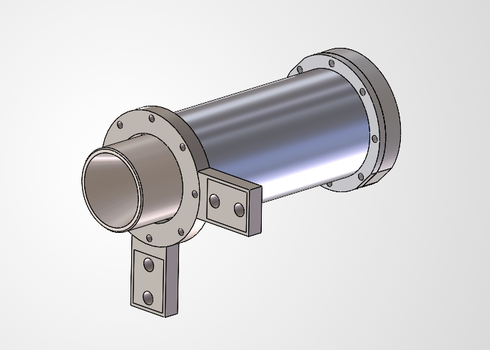
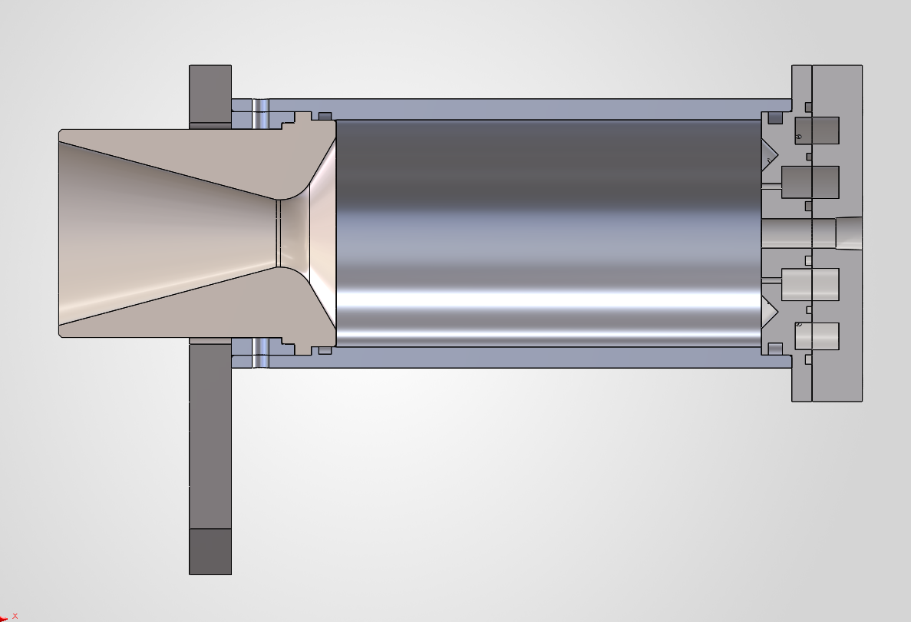

Pollux
Pollux is Castor’s twin ablative engine, developed for the NILE test stand and integration with the thrust vector control system.

Design Targets & Model Estimates
- Target thrust
- At least 300 lbf
- Model-predicted thrust
- 283.39 lbf
- Modeled chamber pressure
- 270 psia
- Calculated total mass flow
- 0.66799 kg/s
- Calculated fuel mass flow
- 0.167 kg/s
- Calculated oxidizer mass flow
- 0.50099 kg/s
- Calculated chamber length
- 5.209 in
- PDR hotfire-duration requirement
- At least 10 s
Design requirements and calculation outputs from TVC PDR slides 6, 12 and 13. Model estimates are not measured hotfire results.
Background & Rationale
Pollux is the twin of Castor and is being developed for the NILE test stand. Its role is to support the thrust vector control project’s engine and gimbal integration.
The TVC PDR documents the engine’s sizing model and mechanical design, including an arrangement intended to support engine changes at the test stand.
Key Mission Goals
Progress & Current Work
The supplied project material includes engine CAD, a cross-section, and sizing calculations in the TVC preliminary design review. The engine is intended for NILE/TVC integration.
Development Timeline
[Milestone title]
[Milestone summary]
Milestone details
Images & Captions

Video
[Video caption]
Data & Telemetry Curves
Choose a published test recording to explore its measurements.
Test data not yet published.
Documentation & Publications
Download TVC Preliminary Design Review (PPTX)
Engine requirements: slide 6. Mass flow, thrust and chamber-length calculations: slide 12. Modeled chamber pressure: slide 13. Mechanical design: slide 14.